海員
阿米娜·安奈富 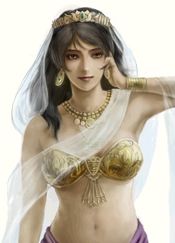
德尼雅·伊蒂哈德 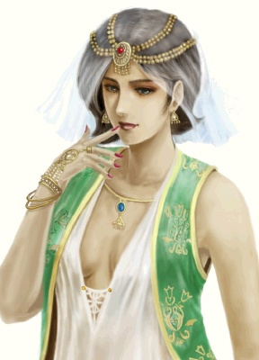
法娣玛·哈涅
哈希姆·阿尔奈迪尔 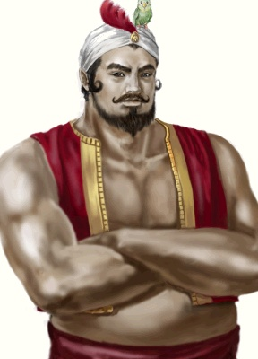
行久·玄丞·白木 大阪 酒館 得知消息 到 北海道(北緯42 東經141) 加入之
乙凤·宋 京城 廣場
尤里安·罗佩斯 杭州 酒館 觸發劇情 京城 酒館 觸發劇情 進入 京城 遺跡 回到 杭州 酒館
华梅·玛利亚·李 威壓 或 消滅 倭奴 李朝水師 未被滅 未處於交戰狀態 到 京城 加入之
希恩·杨 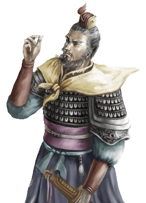 同 華梅
查理·约翰·洛雪弗 吉阿丁 交易所
弗利奥·埃涅科 美人 克丽丝汀娜 在主艦 馬六甲 酒館
米哈易尔·勒茨 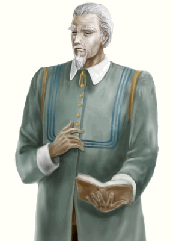 印度洋 港口
易安·杜可夫 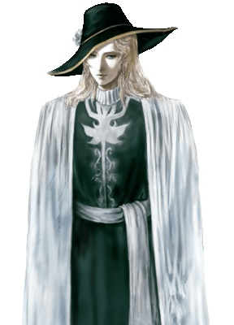 巴斯拉 碼頭
阿尔·菲利德·西恩 與 埃斯皮諾 第一艦隊 交戰 無論勝負(得知 阿爾消息) 資金10萬以上 進入東非 任意港口後 觸發劇情 支付5萬 加入之
曼努埃尔·阿尔米达 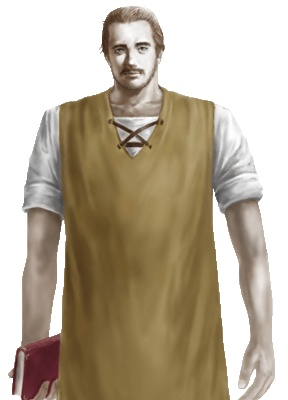 乙鳳在主艦 聖喬治 酒館
杰拿斯·帕沙 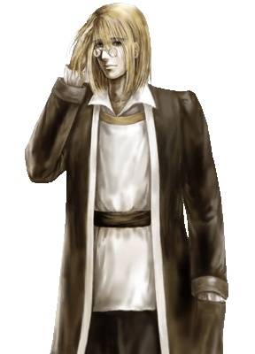 里斯本 出海後 加入
费南德·迪阿斯塞維利亞 酒館
科鲁罗·西奈特 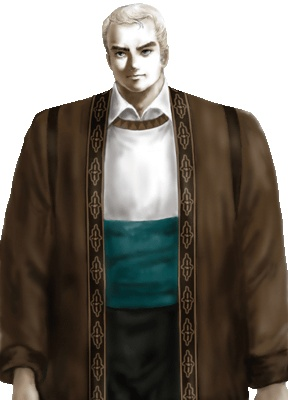 威利斯 交易所 西拉庫薩達 交易所 威利斯
安杰洛·普契尼 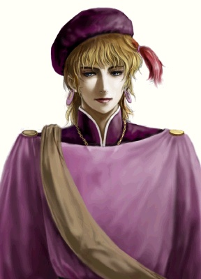 雅典
铁礼列·滕尼亞歷山大
谢尔·阿里·内迪姆 米哈易爾 在主艦隊 聽米哈易爾 提起 謝爾 北非港口 得知消息 進入 亞歷山大 遺跡 加入之
詹姆·杰克·鲁德韦 南特
克丽丝汀娜·埃涅科-弗利奥 詹姆在主艦 倫敦 酒館 加入之
格尔哈特·阿迪肯 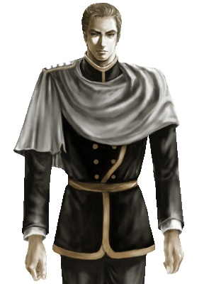 漢堡得知 格爾哈特 與 圖魯維 交戰 遇見 格爾哈特 與 圖魯維 交戰 選擇 加入 格爾哈特艦隊/脫離 佔線 威壓/消滅 圖魯維 加入之
塞维·达·汉 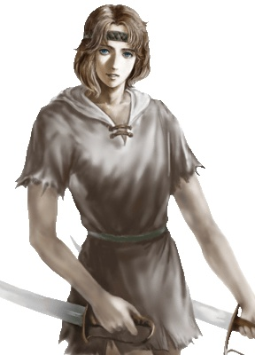 波多韋羅 廣場
埃米利奥·菲隆 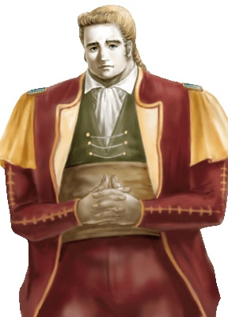 費迪南在主艦 委拉克路斯
東亞
北緯40 東經121 竹藝品的組合說明書： 進入東亞 中國海港 觸發劇情 得到 地圖 進入 京城 遺跡 (解密選擇 1 3 2 2) 獲取之 唐代的竹藝品： 進入過 杭州遺跡 持有 金銅的布錢 (在東南亞 馬尼拉/文萊/馬納多 觸發佐伯 劇情 幹掉佐伯 獲取之) 勢力2000以上時 在泉州外的 東亞海港 觸發 劇情 進入 杭州 遺跡 解開 謎語(1 3 2) 獲取之
東南亞
北緯14 東經123 裝有乳液的壺： 勢力 1000 以上時 進入 馬六甲 以外 海港 提示 馬六甲遺跡 進入 馬六甲 酒館 劇情後出現 選項 選3 獲取 地圖 (選錯 運 鑽石 ；藍寶石 祖母綠 各1個 才能得到地圖) 進入遺跡 獲取之 古代王國的錢幣： 勢力 2000 以上 到 吉阿丁 以外 城市酒吧 得到消息 進入 吉阿丁 遺跡 解密 (10/10 0/7 0/3 10->7 3/10 7/7 0/3 7->3 3/10 4/7 3/3 3->1 6/10 4/7 0/3 3->10 6/10 1/7 3/3 7->3 9/10 1/7 0/3 3->10 9/10 0/7 1/3 7->3 2/10 7/7 1/3 10->7 2/10 5/7 3/3 7->3 5/10 5/7 0/3 3->10 ) 獲取之
印度洋
不枯萎的蓮葉： 貴霜朝的大盤： 勢力1000以上 進入卡里亥特 得到尋早詩人任務 先後到 馬德拉斯 馬斯利巴丹 加爾各答 酒館 遇見詩人 詩人 出選項 選1 去 巴斯拉 旅館 選2 去 喀拉蚩 旅館 選3 去 馬德拉斯 旅館 獲得 地圖 計入卡里亥特 遺跡 獲取之